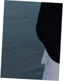
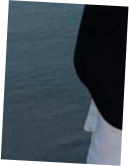

I’m 19 years old, I’ve been programming for 7 years, and for 3 of those years I’ve been getting paid for my work. My strongest side is frontend. I worked in two companies and during 2024 I was doing my own freelance for almost the whole year, where I earned more than 3 thousand dollars. From the beginning, I wanted to specialize as a creator of visually attractive websites — it was like my hobby, something I was drawn to and really enjoyed. Back then, I just wanted to make beautiful and unusual websites where everything moves, looks alive, and stands out. But now I’m looking not just for projects but for a stable job, because I want confidence and growth in something steady.
I’m 19 years old, I’ve been programming for 7 years, and for 3 of those years I’ve been getting paid for my work. My strongest side is frontend. I worked in two companies and during 2024 I was doing my own freelance for almost the whole year, where I earned more than 3 thousand dollars. From the beginning, I wanted to specialize as a creator of visually attractive websites — it was like my hobby, something I was drawn to and really enjoyed. Back then, I just wanted to make beautiful and unusual websites where everything moves, looks alive, and stands out. But now I’m looking not just for projects but for a stable job, because I want confidence and growth in something steady.
I’m 19 years old, I’ve been programming for 7 years, and for 3 of those years I’ve been getting paid for my work. My strongest side is frontend. I worked in two companies and during 2024 I was doing my own freelance for almost the whole year, where I earned more than 3 thousand dollars. From the beginning, I wanted to specialize as a creator of visually attractive websites — it was like my hobby, something I was drawn to and really enjoyed. Back then, I just wanted to make beautiful and unusual websites where everything moves, looks alive, and stands out. But now I’m looking not just for projects but for a stable job, because I want confidence and growth in something steady.
Since programming was originally my hobby, I had the chance to try myself and work in different areas. Over the years, I realized that frontend and backend together are my strongest side. Before, I only focused on the result, but now I also understand the importance of details and pay more attention to doing things right. In total, I earned around more than 6 thousand dollars, and all of it came from promoting myself, learning, and trying things out. My main tools are HTML5, CSS3, SCSS, JavaScript, and React.js. I’m a supporter of clean code, and I mostly make projects without React because most of them are landing pages.
Animations are a separate topic that’s especially close to me. I work with GSAP and plugins like ScrollTrigger, MotionPathPlugin, DrawSVGPlugin, and GSDevTools. Through them, I can bring websites to life, make movement, transitions, and a feeling of dynamics. From libraries and frameworks, I use Swiper, Bootstrap, and I’m currently learning Three.js to add 3D and complex effects in the future. Besides code, I’ve also been into design — I went through guides, courses, watched tutorials, and practiced. This helps me understand the visual part so that the website looks complete and not just like a set of blocks. Design for me is a supporting part, but an important one — without it, a website loses its meaning.
Besides web, I’m also interested in algorithms. Right now, I study at two universities, and there I often deal with creating algorithms, plus I’m just personally interested in this topic. It helps me develop my thinking and write code more logically. I also took part in creating a game with a group of friends; we worked on it for about a year, and this experience showed me how important it is to communicate and share tasks. Now my goal is to find an employer, a team, or a place where I can work as a programmer in any field. That’s what attracts me the most — it’s where I feel I belong. But I love programming in general and want to return to work after a year-long break and a job in a warehouse. I just need a place where I can do what I truly enjoy and keep developing further.
Event host
Radio Director
Сlient